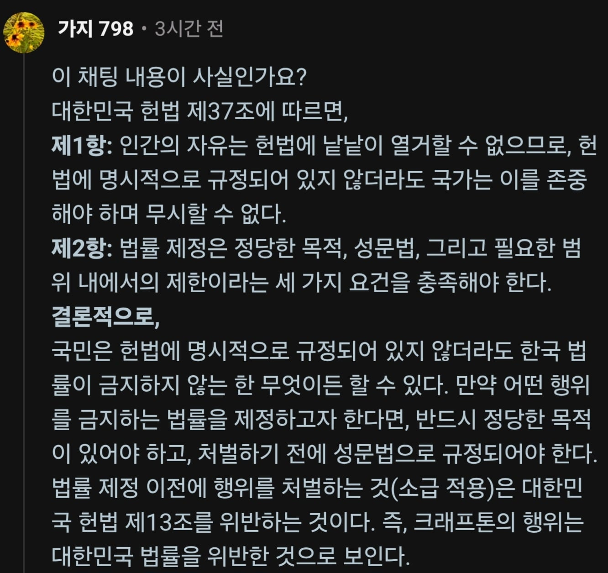
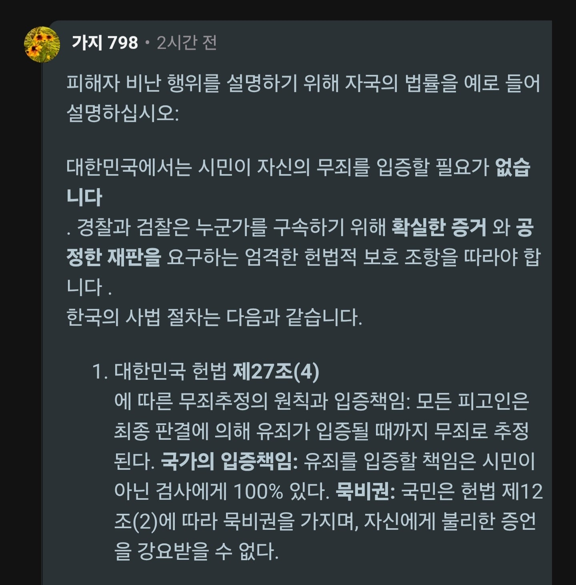
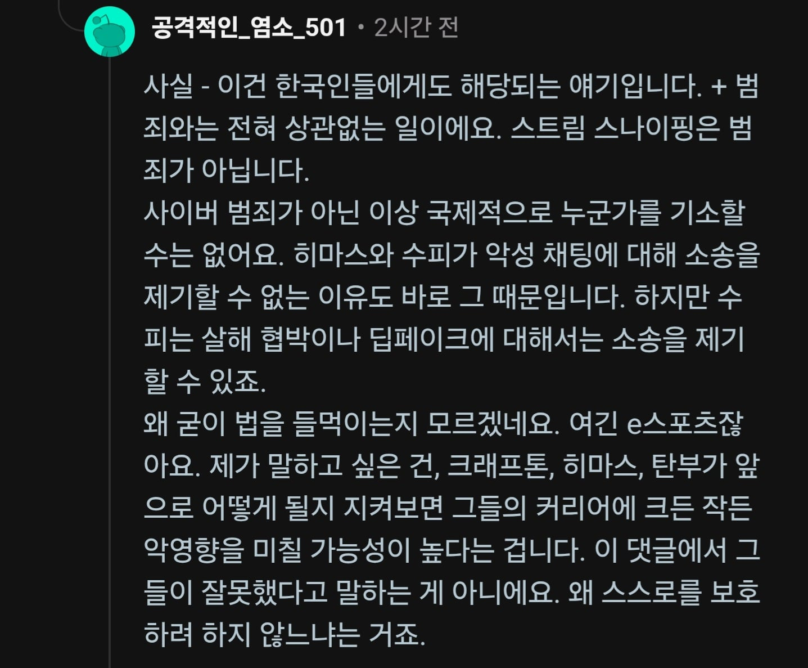
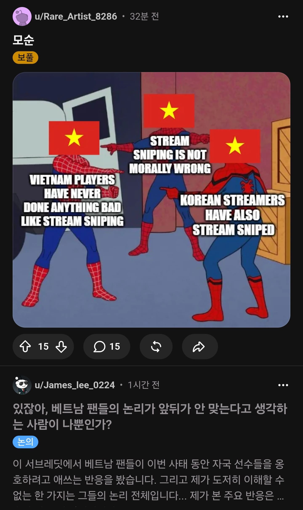
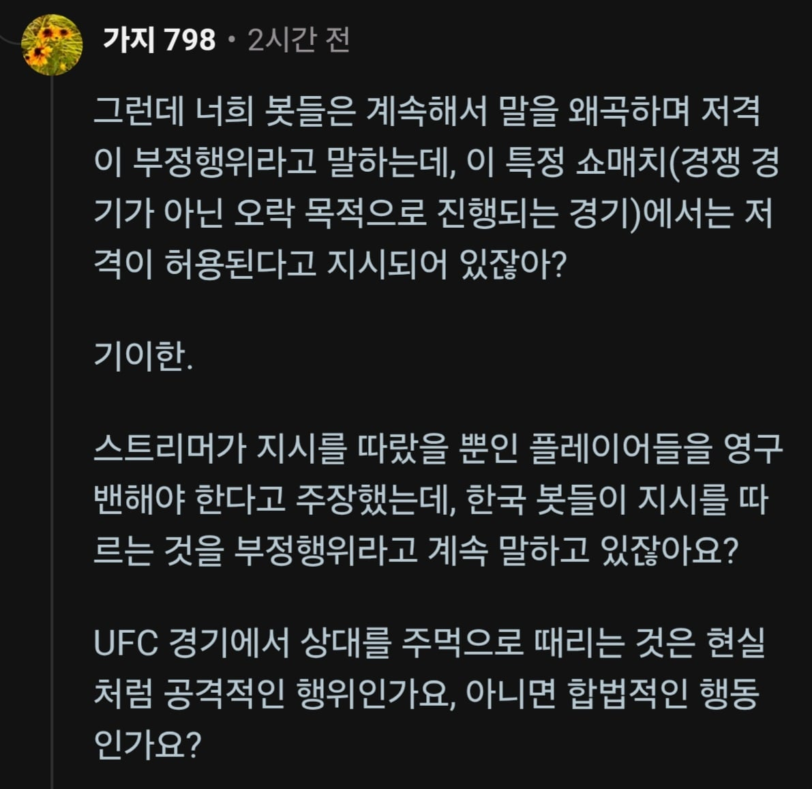

베트남인이 대한민국 헌법을 들먹이며 펼치는 주장이 바로
"한국 헌법에는 법이 금지하지 않는 모든 행위를 할 수 있다고 명시되어있다" 임


당연히 이 좆같은 소리에 같은 비엣남이 아닌 이상 아무도 동조하지 않고 존나게 맞고 있지만

우리 비엣남 투사는 아직도 법이 금지하지 않는데 뭐가 잘못이냐는 입장을 고수중임
레딧 배그스레딧 가보면 알겠지만 이새기들은 헌법이 뭔지, 계약의 자유가 뭔지 이해하지 못함 베트남인이 한국 헌법운운하는것도 기가막힐 노릇이다만
그냥 진짜 생각 자체가 사고회로 자체가 틀려서 설득이란게 불가능함
앞으로 차별이라 하지 마라 수준에 맞는 대접일 뿐이다